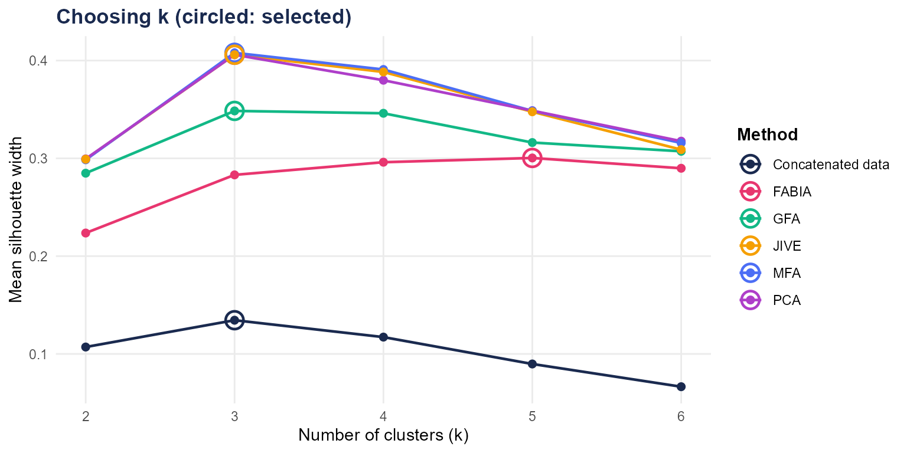
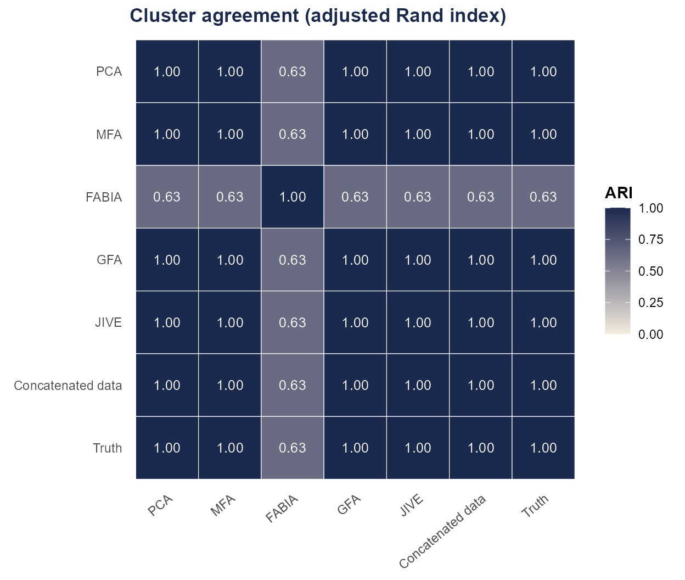
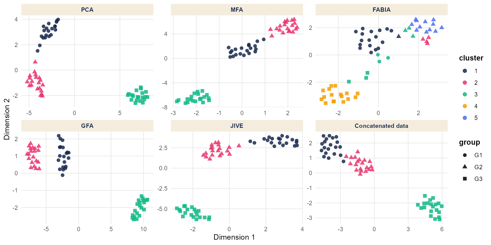

Factor models compress many features into a few factors; clustering on those factors is often more robust than clustering on the raw features, because noise and view size imbalance are reduced.
library(factomics)
sim <- simulate_multiomics(n_samples = 60, n_groups = 3, seed = 1)
res <- run_factor_pipeline(sim$data,
methods = c("PCA", "MFA", "FABIA", "GFA", "JIVE"),
k = 4, verbose = FALSE)
truth <- setNames(sim$metadata$group, sim$metadata$sample)One matrix
cluster_samples() clusters any samples x features matrix
with k-means, hierarchical clustering (Ward) or PAM. Give several values
of k and the one with the highest mean silhouette width is
kept:
cl_mfa <- cluster_samples(res$MFA$scores, method = "hclust", k = 2:6)
cl_mfa
#> <factomics_clustering> hclust, k = 3, mean silhouette = 0.399
#> cluster
#> 1 2 3
#> 22 20 18
cl_mfa$by_k
#> k silhouette
#> 1 2 0.2858014
#> 2 3 0.3994010
#> 3 4 0.3275619
#> 4 5 0.3061201
#> 5 6 0.2796139By default the factor scores are not
re-standardised, so each factor keeps its own variance and weak or noise
factors weigh less. Use scale = TRUE to give every factor
equal weight.
Every method at once
cl <- cluster_results(res, cluster_method = "kmeans", k = 2:6)
cl
#> <factomics_clusters>
#> method algorithm k silhouette
#> PCA kmeans 3 0.406
#> MFA kmeans 3 0.408
#> FABIA kmeans 5 0.300
#> GFA kmeans 3 0.349
#> JIVE kmeans 3 0.406
#> Concatenated data kmeans 3 0.134
plot_clusters(cl, "silhouette")
Agreement between methods and with known labels
cmp <- compare_clusterings(cl, truth = truth)
round(cmp$agreement, 2)
#> PCA MFA FABIA GFA JIVE Concatenated data
#> PCA 1.00 1.00 0.63 1.00 1.00 1.00
#> MFA 1.00 1.00 0.63 1.00 1.00 1.00
#> FABIA 0.63 0.63 1.00 0.63 0.63 0.63
#> GFA 1.00 1.00 0.63 1.00 1.00 1.00
#> JIVE 1.00 1.00 0.63 1.00 1.00 1.00
#> Concatenated data 1.00 1.00 0.63 1.00 1.00 1.00
cmp$vs_truth
#> method ARI
#> 1 PCA 1.0000000
#> 2 MFA 1.0000000
#> 3 FABIA 0.6330688
#> 4 GFA 1.0000000
#> 5 JIVE 1.0000000
#> 6 Concatenated data 1.0000000
plot_clusters(cl, "agreement", truth = truth)
Clusters in an embedding
Pass the clustering to plot_embedding() to colour each
method’s embedding by its own clusters:
emb <- embed_results(res, type = "umap")
plot_embedding(emb, clusters = cl, shape_by = "group",
metadata = sim$metadata)
Comparing algorithms
algos <- c("kmeans", "hclust", "pam")
ari <- sapply(algos, function(a) {
cl_a <- cluster_results(res, cluster_method = a, k = 2:6)
setNames(compare_clusterings(cl_a, truth)$vs_truth$ARI,
cl_a$summary$method)
})
round(ari, 2)
#> kmeans hclust pam
#> PCA 1.00 0.90 0.95
#> MFA 1.00 0.90 0.95
#> FABIA 0.63 0.65 0.74
#> GFA 1.00 1.00 0.95
#> JIVE 1.00 0.80 0.95
#> Concatenated data 1.00 0.95 0.90